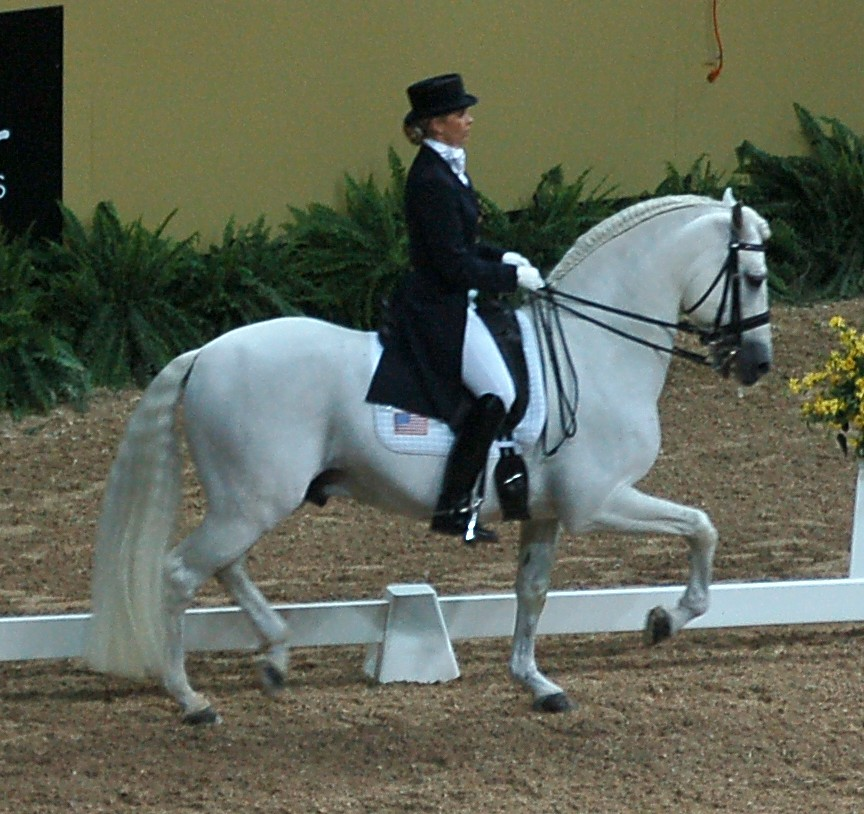
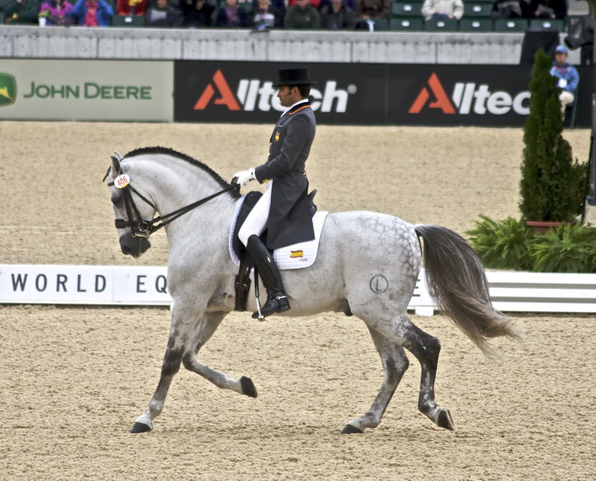

Från Spanien till världseliten
PRE-hästen har under århundraden förknippats
med elegans och klassisk ridkonst. Men PRE-hästen
har också visat att den kan konkurrera på den
internationella dressyrarenan. Flera hästar har
representerat Spanien i både olympiska spel och
världsmästerskap.
Rociero XV

Rociero XV är en spansk PRE-hingst född 1995
som tävlade i internationell dressyr.
Tillsammans med den amerikanska ryttaren
Kristina Harrison-Naness deltog han vid
världscupfinalen i dressyr 2007.
Ekipaget visar hur den traditionella
spanska hästrasen även har en plats
inom den moderna tävlingsdressyren.
Norte

Norte är en PRE-hingst som har ridits av
den spanske dressyrryttaren
José Antonio García Mena.
Ekipaget visar hur PRE-hästens balans,
samling och rörelser kommer till sin rätt
inom dressyren, där samspelet mellan
häst och ryttare står i centrum.
Fuego XII – publikfavoriten
Fuego de Cárdenas, även känd som Fuego XII,
är en av de mest uppmärksammade PRE-hästarna
inom internationell dressyr. Tillsammans med
ryttaren Juan Manuel Muñoz Díaz representerade
han Spanien vid OS i Peking 2008 och London 2012.
Vid världsmästerskapen i Kentucky 2010 imponerade
ekipaget stort och blev en publikfavorit.
Invasor – en del av spansk dressyrhistoria
Invasor var en betydelsefull häst för Spaniens
framgångar inom dressyren. Tillsammans med
Rafael Soto deltog han i flera internationella
mästerskap. Vid OS i Aten 2004 var ekipaget
en del av det spanska laget som tog silver.
Framgången visade att PRE-hästar kunde hävda
sig på högsta internationella nivå.
Grandioso III – en internationell stjärna
Grandioso III var en annan framstående PRE-häst.
Tillsammans med José Daniel Martín Dockx
representerade han Spanien vid OS i London
2012 och Rio de Janeiro 2016. Han blev även
spansk mästare i Grand Prix-dressyr två gånger.
Grandioso III bidrog till att stärka rasens
ställning inom internationell tävlingsdressyr.